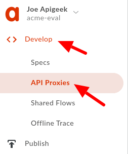
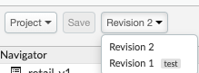

When building proxies that point to other services in the backend, it is important to separate the code portion from the configurations and not hardcode any URLs or other details specific to the backend service. Services will usually have different instances in different places for different environments or stages of the development cycle (dev, test, staging, etc). It is important that when promoting your proxy, you do not rely on code changes to be able to push the proxy code to the next environment/stage.
In this lab we will focus on the URL configuration for our target service.
What you'll learn
- How to separate configuration from code
- Create a named target server for each environment
- Modify your existing proxy to point to a pre configured target server
What you'll need
- Your proxy created in the previous lab.
Use case
The proxy you created needs to be promoted across different environments and point to their backend systems at each stage of the development cycle.
The proxy previously created has a hard-coded URL as the target configuration and that must change.
Download a working solution to the previous lab as a proxy bundle ZIP file:
Find your spec ID. When you open your spec in the spec editor, the link will be in this format, with the spec ID at the end of the URL:
https://apigee.com/organizations/YOURORG/specs/folder/FOLDERID/editor/YOURSPECID
Navigate to your proxy and upload the bundle as a new revision:

Select the association.json resource. Replace YOURORG and YOURSPECID with the values from the spec URL.

Once updated, the association.json should look something like this:
{
"url": "/organizations/apigeek-eval/specs/doc/207966/content"
}
Click Save to save your proxy. Open the Deployment menu, and check the deployment status. Click on test to deploy this revision of the proxy.

Test will be green when it is deployed.

- Configure a new Target Server
- Update the API proxy to use the target server
- Test your changes
- Optional - repeat for all environments with different configurations
Log into your Apigee org.
Click on Admin, and then click on Environments and select Target Servers:
Make sure you select the correct Environment to make the changes:
For now, let's use ‘test':

Create a new target server by clicking on +Target server button on the upper right corner (you may have to scroll depending on your screen resolution):
A new popup screen will appear for you to fill in the details of your target server:
Enter the configurations to be used for the server:
Name
TS-Retail
Host
gcp-cs-training-01-test.apigee.net
Port
443
Confirm that the Enabled and SSL boxes are checked. Checking the SSL box will show some other configuration fields:
We can leave all of these defaulted for now. Click on Add.
You should then see your newly created Target Server listed as below:
Double check your server configurations before continuing.
Now let's go back into our API proxy. Click on Develop and then click on API Proxies.

Now click on the proxy name to view its configurations, followed by a click to the Develop tab:
Whenever we save changes to a proxy, it will overwrite the current revision. To make sure we can go back to our previous version if we want to, let's save as a new revision.

Then we'll need to deploy this version to test. Click the Deployment menu, and then select the test environment. It will be green when the selected revision is deployed.

Look for the Target Endpoint configurations and select ‘default':
You should see on the bottom mid panel, the XML configuration for the default Target Endpoint:
On line 16 (it may be different in your proxy), you'll find the backend URL hardcoded in the proxy code itself.
In order to remove the hardcoded URL, we need to change it to point to the Target Server we configured in the previous step, by replacing the URL element with the following:
<LoadBalancer>
<Server name="TS-Retail"/>
</LoadBalancer>
<Path>/training/db</Path>Your final configuration should look like:
Please note that the Path information is still set in the proxy itself, allowing the same target server to host multiple services.
You must click on the Save button in order for your proxy to get updated and redeployed.
If for any reason you save as a new revision, you will have to make sure you are deploying and testing on the correct revision.
The UI will show you which revision is deployed currently and to which environment:

To deploy a specific revision, select it on the revision drop down and then on the deployment drop down, click on the environment to deploy it to:
After deployment, you should see a green dot next to the environment you selected:
Testing will be done the exact same way as in the previous lab. Send a GET request to your proxy with the appended /categories to the URL. You should still be getting a 200 OK response with the exact same payload as you did before changing the proxy to use a target server.
Note that the Send Requests box is just an easy way to create a GET request for your proxy. However, you cannot add headers to or change the verb for the request. All traffic traveling through your proxy is traced, though, when trace is turned on. Therefore, you can make requests via any REST API tool, such as curl, httpie, or Postman and visualize them in the trace tool.
Typically your test and prod backends will be different.
Create a new Target Server, but this time under the prod environment with the following details:
Name (must be the same)
TS-Retail
Host (this is now the prod host)
gcp-cs-training-01-prod.apigee.net
Port
443
Click on Add.
Deploy your proxy to prod and test it!
You have separated your backend configurations from your proxy code and you are now able to promote your proxy to different environments with no need to update the code.